Robot arm assembly guideDesktop robot arm · assembly guide · rev A · 2026-11-14
Assembly guide
14 steps from bare plywood to a load-tested arm. Every picture comes from the 3D test table (python run.py ui, Parts tab, Assembly steps), new parts in colour and the parts already fitted in grey. Part numbers match the drawings (P-xx printed, BASE/YAW/GSK/ENC/TUBE/SHAFT/LEG cut), fastener numbers match fab/FASTENERS.md. Torques in N·m.
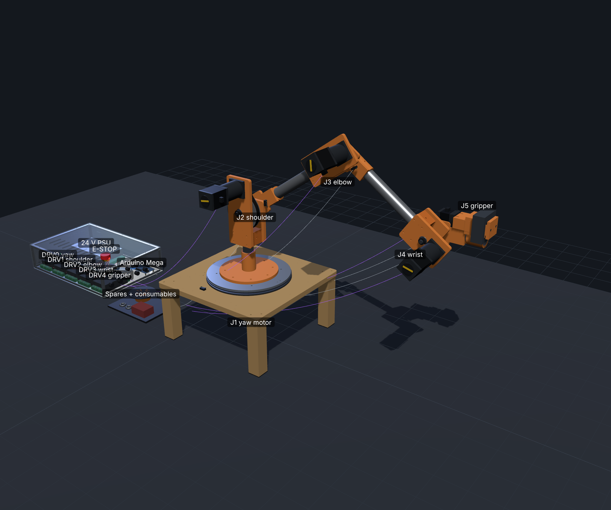
Steps
- Prepare the base board
- Mount the yaw gearmotor
- Seat the gasket and turntable
- Yaw adapter disc, hub and base plate
- Bond the riser tube
- Build and fit the shoulder joint
- Fit the upper arm tube
- Build and fit the elbow joint
- Fit the forearm tube
- Build and fit the wrist joint
- Assemble and fit the gripper
- Build the electronics enclosure
- Wire the arm
- Power up, home and load-test
Fasteners used in this guide
| No. | Fastener | Std | Qty | N·m |
|---|
| F01 | M5 x 90 socket head cap screw, A2-70 stainless | ISO 4762 | 15 | 2.5 |
| F02 | M5 x 60 socket head cap screw, A2-70 | ISO 4762 | 3 | 2.5 |
| F03 | M5 x 16 socket head cap screw, A2-70 | ISO 4762 | 16 | 2.5 |
| F04 | M5 x 20 socket head cap screw, A2-70 | ISO 4762 | 12 | 2.5 |
| F05 | M5 x 16 socket head cap screw, A2-70 | ISO 4762 | 4 | 4.0 |
| F05W | M5 fender washer 15 mm OD, A2 | ISO 7093 | 4 | - |
| F06 | M6 x 25 socket head cap screw, A2-70 | ISO 4762 | 8 | 3.5 |
| F07 | M5 x 30 button head screw, A2-70 | ISO 7380 | 4 | 3.0 |
| F07T | M5 four-prong tee nut, 8 mm barrel x 9 mm | DIN 1624 | 4 | - |
| F08 | M5 x 20 socket head cap screw, A2-70 | ISO 4762 | 4 | 4.0 |
| F09 | M4 x 14 socket head cap screw, A2-70 | ISO 4762 | 4 | 1.2 |
| F10 | M4 brass heat-set insert, OD 5.7-6.0 x 8.1 long | knurled, for plastics | 4 | - |
| F11 | M3 x 10 socket head cap screw, A2-70 | ISO 4762 | 4 | 1.0 |
| F12 | M3 x 40 socket head cap screw, A2-70 | ISO 4762 | 4 | 0.6 |
| F13 | M3 x 12 pan head screw + M3 nut + 2 washers, A2 | ISO 7045 / ISO 4032 | 2 | 0.5 |
| F14 | No.10 x 3 in flat head wood screw (5 x 75 mm) | ASME B18.6.1 | 8 | - |
| F15 | M3 x 8 button head screw + M3 nyloc nut, A2 | ISO 7380 / ISO 10511 | 60 | 0.6 |
| F16 | M3 x 10 brass standoff M-F + M3 x 6 screw + M3 nut | - | 4 | 0.4 |
| F17 | M4 x 10 pan head screw + M4 nyloc + washer, A2 | ISO 7045 | 24 | 1.2 |
| F18 | Rubber bumper foot 20 x 10 mm with M4 x 12 screw | - | 4 | - |
1Prepare the base board
Time about 2 h + finish drying · Tools: CNC router or jigsaw, drill press, 90° countersink, 3 mm and 8 mm bits
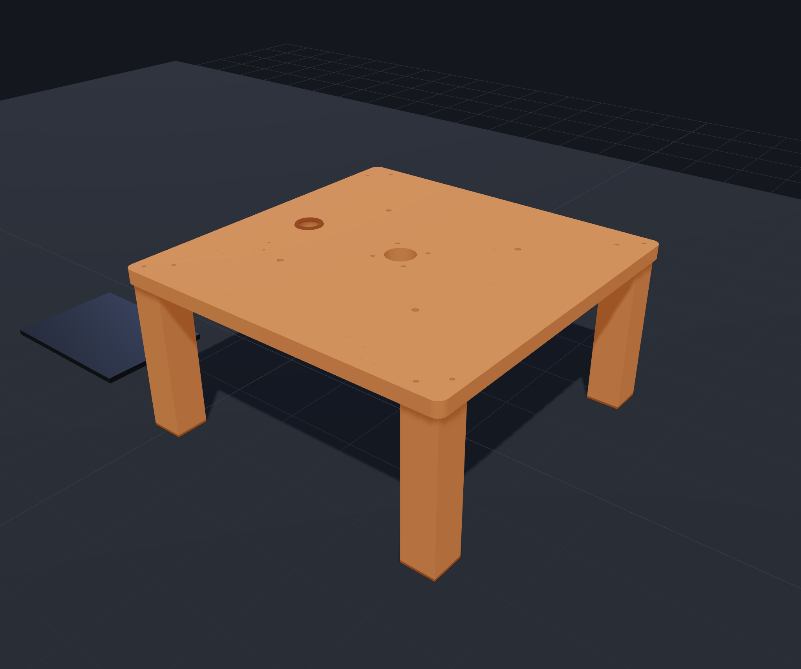
Parts| Part | Description | Qty |
|---|
| BASE-01 | base board | 1 |
| LEG-01 | base leg | 4 |
| GSK-03 | foot pad | 4 |
| - | 32 mm grommet | 1 |
Fasteners| No. | Fastener | Qty | N·m |
|---|
| F14 | No.10 x 3 in flat head wood screw (5 x 75 mm) | 8 | - |
| F07T | M5 four-prong tee nut | 4 | - |
- Cut BASE-01 from fab/dxf (or tape the 1:1 template to the plywood and centre-punch every cross).
- Rout the 61.5 x 61.5 mm [2.42 in] pocket 12 mm [.47 in] deep on the UNDERSIDE, centred on the Ø39.1 pilot hole.
- Drill holes A-F to the sizes in the BASE-01 hole table. Countersink the eight E holes 90° x Ø10.5 on the top face.
- Press the four F07T tee nuts into the C holes from below (tap home with a hammer and a block).
- Saw four LEG-01 at 200 mm, drill two Ø3.0 x 60 pilots in each top face on the diagonal, glue a GSK-03 pad under each.
- Screw the legs on with F14 (two per leg) and seal the board with two coats of polyurethane. Fit the grommet.
Check before moving on- Board sits flat on all four legs (no rock).
- Tee nuts flush, threads clean (run an M5 screw through each).
2Mount the yaw gearmotor
Time about 20 min · Tools: hex keys, torque driver, blue threadlocker
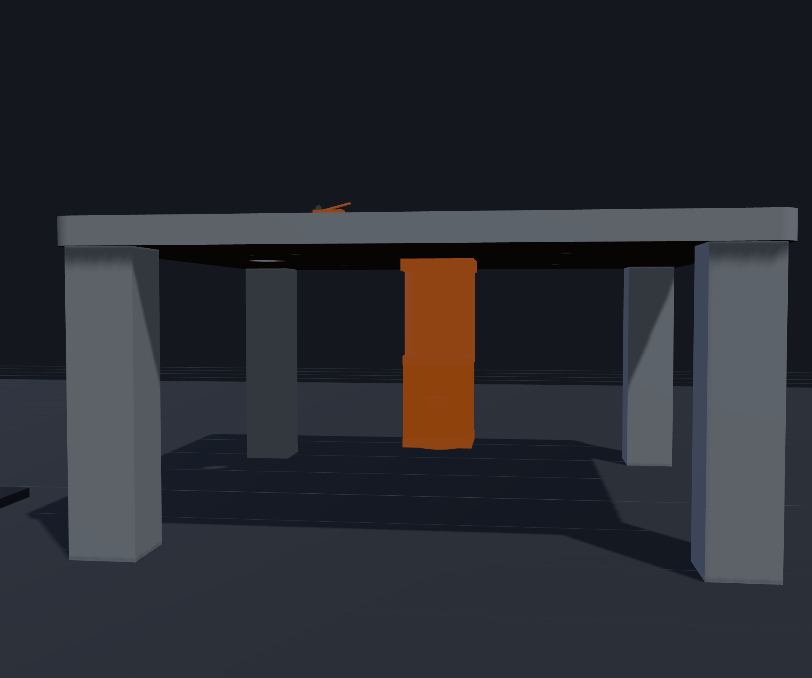
Parts| Part | Description | Qty |
|---|
| - | NEMA 23 + 20:1 gearbox (yaw) | 1 |
| - | limit switch | 1 |
Fasteners| No. | Fastener | Qty | N·m |
|---|
| F05 | M5 x 16 socket head cap screw | 4 | 4.0 |
| F05W | M5 fender washer 15 mm OD | 4 | - |
| F13 | M3 x 12 pan head screw + M3 nut + 2 washers | 2 | 0.5 |
- Measure the gearbox flange and pilot; if they differ from HW in arm/hardware.py, re-run python run.py cut before drilling.
- From below, seat the gearbox flange in the pocket with the output shaft up through the Ø39.1 pilot hole.
- Fit the four F05 screws from the top through fender washers into the flange. Threadlocker, 4.0 N·m.
- Mount the yaw limit switch on the top face with two F13 at the F holes, lever toward the YAW-01 home dog.
Check before moving on- Shaft square to the board (feeler gauge under a square: < 0.3 mm over 50 mm).
- Shaft protrudes enough to engage the clamp hub fully.
3Seat the gasket and turntable
Time about 15 min · Tools: hex keys, torque driver
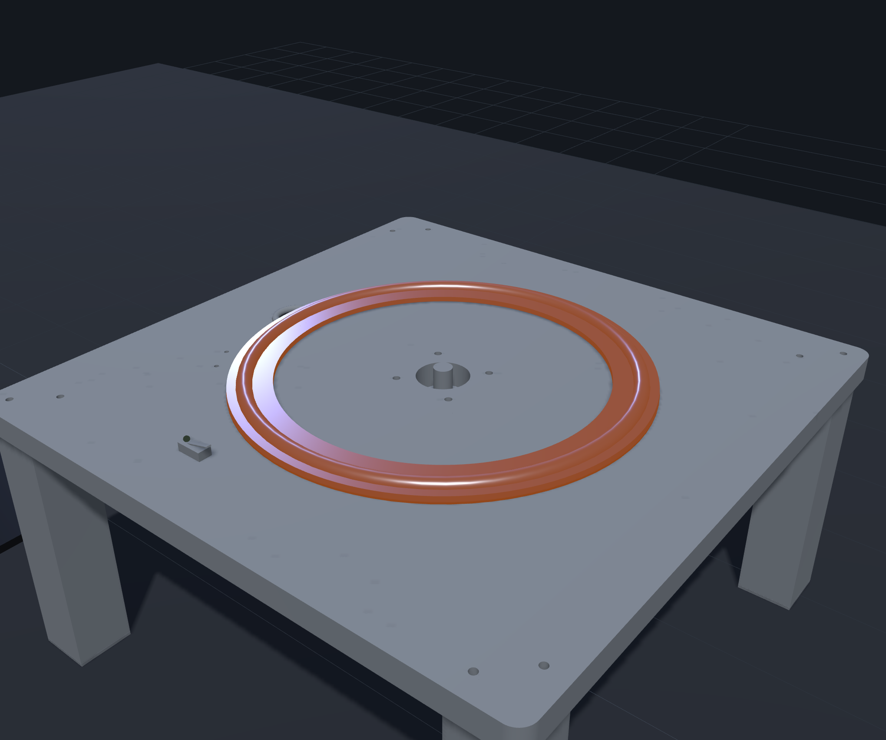
Parts| Part | Description | Qty |
|---|
| GSK-01 | turntable seat gasket | 1 |
| - | 12 in turntable bearing | 1 |
Fasteners| No. | Fastener | Qty | N·m |
|---|
| F07 | M5 x 30 button head screw | 4 | 3.0 |
- Lay GSK-01 on the board with its holes over the tee nuts.
- Place the turntable, fixed (outer) ring down, holes over the gasket holes, centred on the gearbox shaft.
- Fit four F07 button heads into the tee nuts, 3.0 N·m, crossing pattern.
Check before moving on- Turntable turns freely with no rub on the gearbox shaft.
- Ring is concentric with the shaft within 1 mm (measure to the ring edge).
4Yaw adapter disc, hub and base plate
Time about 30 min · Tools: hex keys, torque driver, blue threadlocker
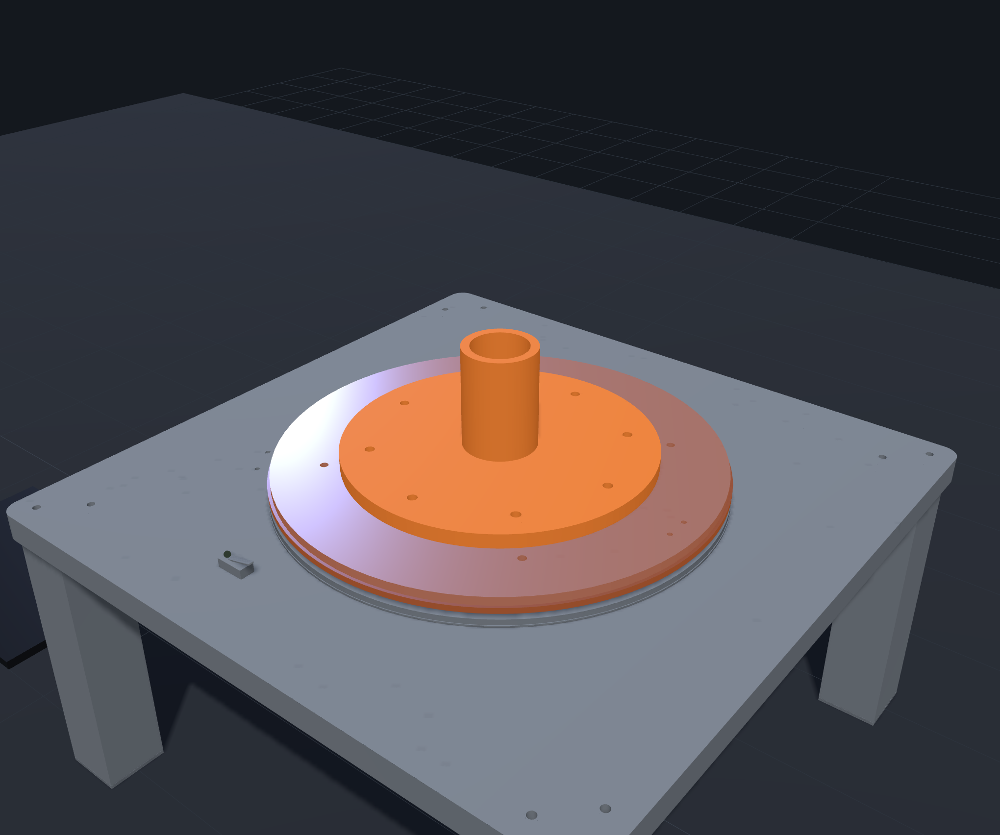
Parts| Part | Description | Qty |
|---|
| YAW-01 | turntable adapter disc | 1 |
| P-11 | base_top_plate (printed) | 1 |
| - | clamp hub (bore = gearbox output) | 1 |
Fasteners| No. | Fastener | Qty | N·m |
|---|
| F08 | M5 x 20 socket head cap screw | 4 | 4.0 |
| F06 | M6 x 25 socket head cap screw | 8 | 3.5 |
| F03 | M5 x 16 socket head cap screw | 4 | 2.5 |
- Bolt YAW-01 to the turntable's rotating ring with four F08 (washer + nyloc), 4.0 N·m.
- Slide the clamp hub onto the gearbox output shaft through YAW-01's centre hole; do not clamp yet.
- Lower base_top_plate onto YAW-01 and bolt it with eight F06 (washers both sides, nyloc), 3.5 N·m.
- Fit four F03 through base_top_plate into the hub flange, 2.5 N·m. Now clamp the hub on the shaft.
- Bolt the home dog (20 x 10 x 3 aluminium tab) across YAW-01's two Ø3.4 holes, M3 x 10 + nuts.
Check before moving on- Rotate by hand through ±150°: smooth, no tight spot, dog trips the switch with an audible click.
5Bond the riser tube
Time about 10 min + cure · Tools: structural epoxy, square, isopropyl alcohol
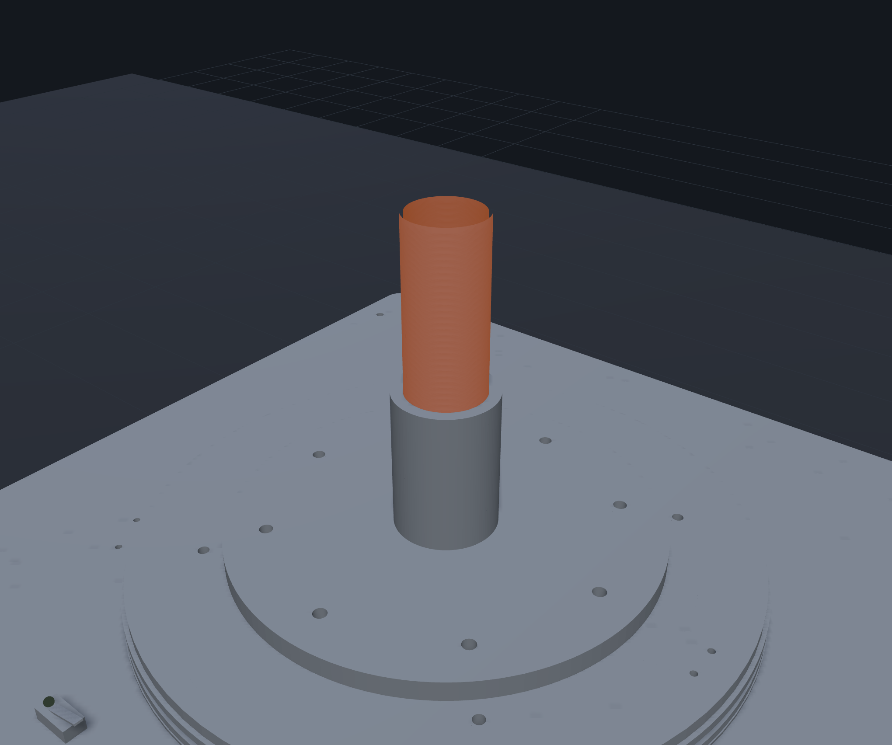
Parts| Part | Description | Qty |
|---|
| TUBE-03 | riser tube 150 mm | 1 |
- Cut TUBE-03 at 150 mm, deburr, and drill the Ø5.5 cross-pin hole 25 mm from the TOP end (V-block).
- Scuff and degrease the bottom 70 mm, butter with structural epoxy and push it fully into base_top_plate's socket.
- Hold it square while the epoxy cures (check two directions with a square).
Check before moving on- Riser vertical within 0.5° in both directions.
6Build and fit the shoulder joint
Time about 1.5 h · Tools: arbor press or vice with soft jaws, 12 mm reamer, torque driver
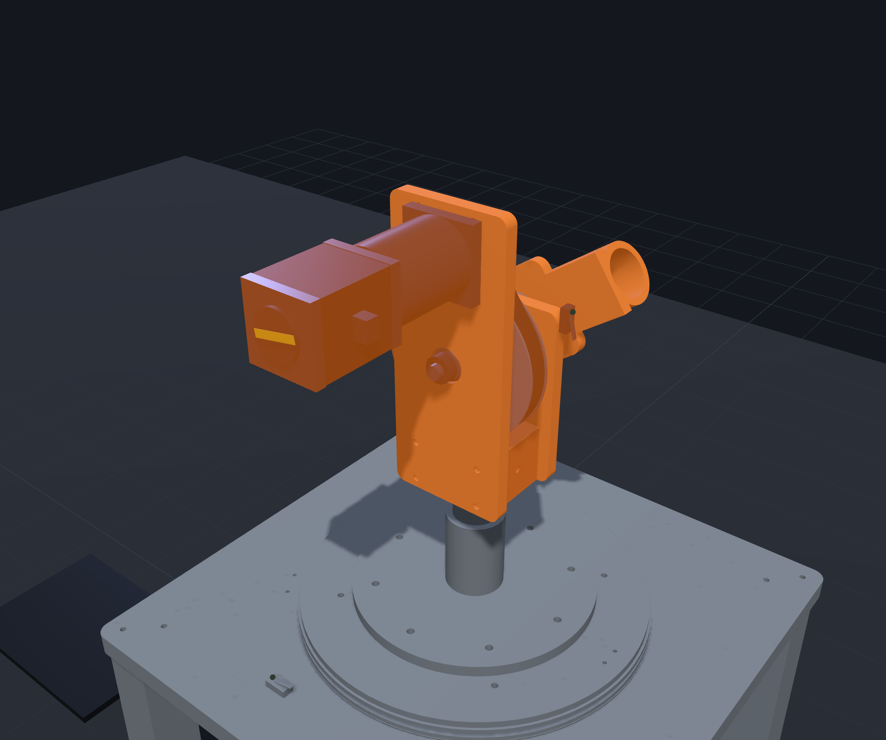
Parts| Part | Description | Qty |
|---|
| P-01 | shoulder_cheek_motor | 1 |
| P-02 | shoulder_cheek_plain | 1 |
| P-03 | shoulder_tube_block | 1 |
| P-10 | tube_socket | 1 |
| SHAFT-01 | joint shaft | 1 |
| - | 6001-2RS bearing | 2 |
| - | HTD 5M 16T + 80T pulleys, belt | 1 |
| - | shaft collar | 2 |
| - | clamp hub | 1 |
| - | NEMA 23 + 20:1 gearbox (shoulder) | 1 |
Fasteners| No. | Fastener | Qty | N·m |
|---|
| F01 | M5 x 90 socket head cap screw | 5 | 2.5 |
| F04 | M5 x 20 socket head cap screw | 4 | 2.5 |
| F03 | M5 x 16 socket head cap screw | 4 | 2.5 |
- Ream the Ø20 shaft holes lightly and check the Ø28.15 bearing counterbores with a bearing: light press fit.
- Press one 6001-2RS into each cheek's counterbore (outer faces).
- Slide the shoulder_tube_block onto the riser top, line up the cross holes and fit F01 as the cross pin.
- Bolt the cheeks to the block with four F01 (washer both sides, nyloc), 2.5 N·m.
- Slide SHAFT-01 through both bearings with the flat on the motor side; fit the 80T pulley on the flat and a collar each side.
- Mount the gearmotor on the motor cheek with four F04 through the slots; fit the 16T pulley and the belt.
- Tension: slide the motor until the belt deflects about 3 mm at mid-span under finger pressure; F04 to 2.5 N·m.
- On the plain side fit the clamp hub, then bolt the tube_socket to it with four F03, 2.5 N·m. Clamp the hub.
Check before moving on- Shaft turns smoothly by hand through the belt, no axial play.
- Limit switch trips at the home end of travel.
7Fit the upper arm tube
Time about 20 min · Tools: drill + 5.5 mm bit, V-block
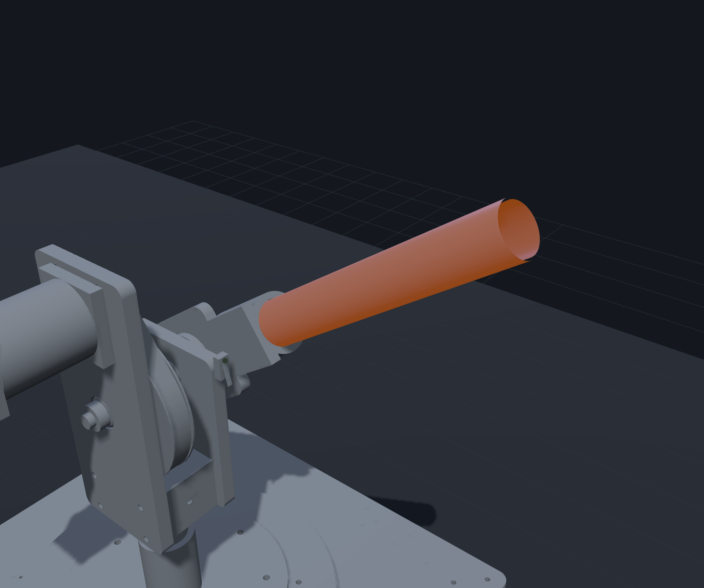
Parts| Part | Description | Qty |
|---|
| TUBE-01 | upper arm tube | 1 |
Fasteners| No. | Fastener | Qty | N·m |
|---|
| F02 | M5 x 60 socket head cap screw | 1 | 2.5 |
- Cut TUBE-01 to length (fab/CUTLIST.md), deburr, drill the pin hole 27 mm from the socket end on a V-block.
- Push it fully into the shoulder tube_socket and fit F02 as the cross pin, 2.5 N·m.
- With the tube in the elbow_tube_block (next step), drill the second hole (25 mm from that end) through the block's hole as a guide.
Check before moving on- Tube fully seated (no gap at the socket mouth).
8Build and fit the elbow joint
Time about 1.5 h · Tools: as the shoulder
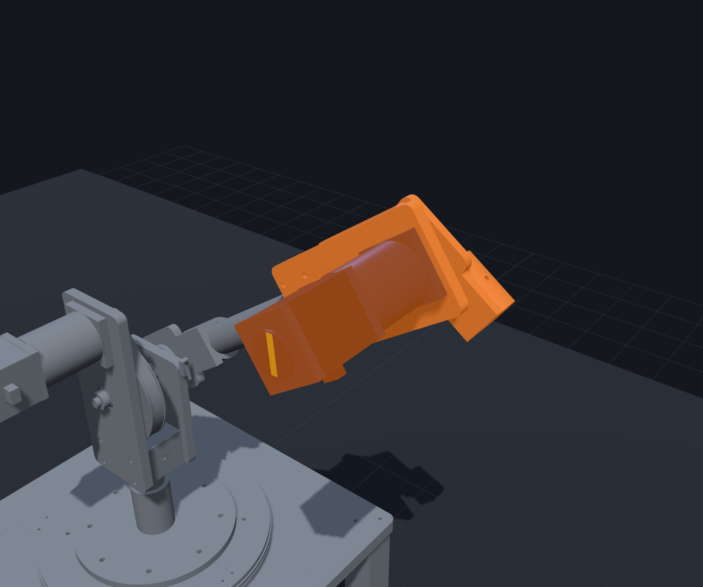
Parts| Part | Description | Qty |
|---|
| P-04..06 | elbow cheeks and tube block | 3 |
| P-10 | tube_socket | 1 |
| SHAFT-01 | joint shaft | 1 |
| - | 6001-2RS | 2 |
| - | 16T + 48T pulleys, belt | 1 |
| - | collars, clamp hub | 3 |
| - | NEMA 23 + 20:1 (elbow) | 1 |
Fasteners| No. | Fastener | Qty | N·m |
|---|
| F01 | M5 x 90 socket head cap screw | 5 | 2.5 |
| F04 | M5 x 20 socket head cap screw | 4 | 2.5 |
| F03 | M5 x 16 socket head cap screw | 4 | 2.5 |
- Repeat the shoulder steps with the elbow parts (3:1 belt stage, 48T joint pulley).
- The upper arm's free end goes into the elbow_tube_block; cross pin F01 through the block and tube.
Check before moving on- Elbow axis parallel to the shoulder axis (sight along both shafts).
9Fit the forearm tube
Time about 20 min · Tools: drill + 5.5 mm bit, V-block
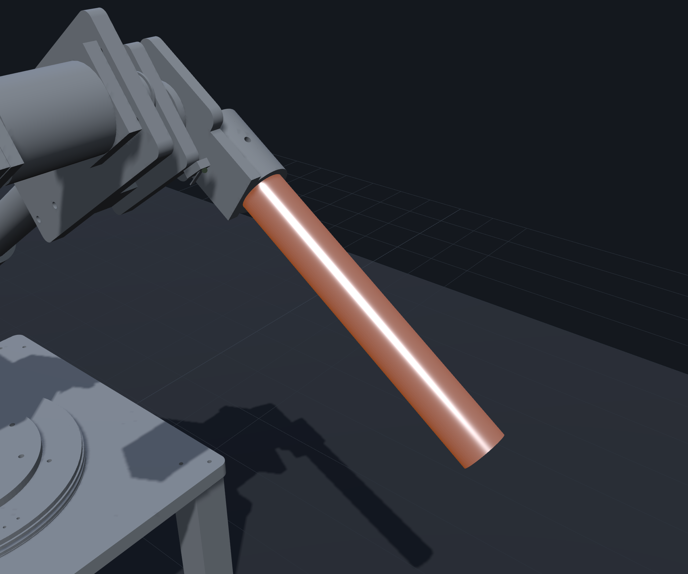
Parts| Part | Description | Qty |
|---|
| TUBE-02 | forearm tube | 1 |
Fasteners| No. | Fastener | Qty | N·m |
|---|
| F02 | M5 x 60 socket head cap screw | 1 | 2.5 |
- As the upper arm: pin 27 mm from the end in the elbow tube_socket (F02), second hole 25 mm from the other end, drilled through the wrist_tube_block.
Check before moving on10Build and fit the wrist joint
Time about 1.5 h · Tools: as the shoulder
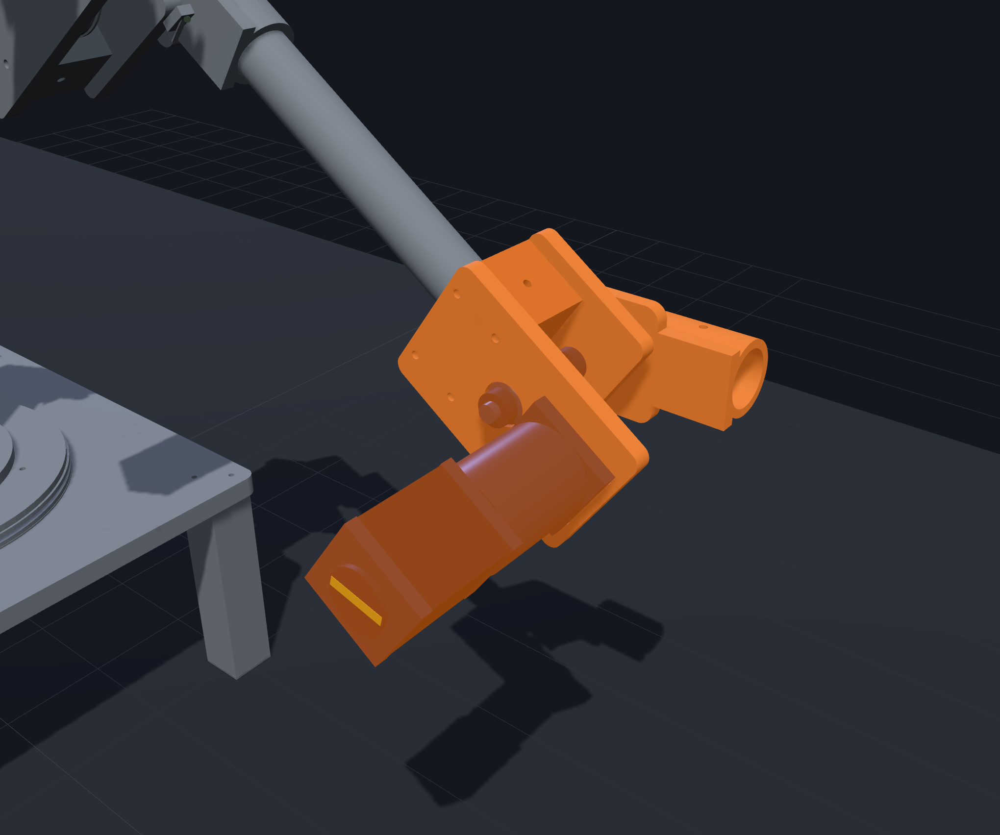
Parts| Part | Description | Qty |
|---|
| P-07..09 | wrist cheeks and tube block | 3 |
| P-10 | tube_socket | 1 |
| SHAFT-01 | joint shaft | 1 |
| - | 6001-2RS | 2 |
| - | 16T + 16T pulleys, belt | 1 |
| - | collars, clamp hub | 3 |
| - | NEMA 23 + 20:1 (wrist) | 1 |
Fasteners| No. | Fastener | Qty | N·m |
|---|
| F01 | M5 x 90 socket head cap screw | 5 | 2.5 |
| F04 | M5 x 20 socket head cap screw | 4 | 2.5 |
| F03 | M5 x 16 socket head cap screw | 4 | 2.5 |
- Repeat the joint steps with the wrist parts (1:1 belt stage).
Check before moving on- Wrist turns freely through its full range.
11Assemble and fit the gripper
Time about 1.5 h · Tools: soldering iron with insert tip, torque driver, retaining compound
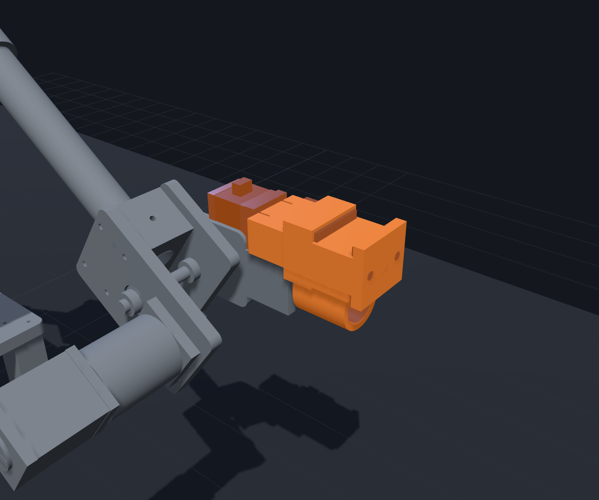
Parts| Part | Description | Qty |
|---|
| TUBE-04 | wrist stub tube | 1 |
| P-12 | gripper_body | 1 |
| P-13 | gripper_adapter | 1 |
| P-14 | gripper_jaw | 1 |
| GSK-02 | jaw pad | 2 |
| - | NEMA 17 + T8 lead screw + coupler | 1 |
| - | 8 mm rods + LM8UU | 2 |
Fasteners| No. | Fastener | Qty | N·m |
|---|
| F10 | M4 brass heat-set insert | 4 | - |
| F09 | M4 x 14 socket head cap screw | 4 | 1.2 |
| F11 | M3 x 10 socket head cap screw | 4 | 1.0 |
| F12 | M3 x 40 socket head cap screw | 4 | 0.6 |
| F02 | M5 x 60 socket head cap screw | 1 | 2.5 |
- Set four F10 M4 inserts in gripper_body's Ø5.6 holes at 230-250 °C, flush with the face.
- Press LM8UU bearings into gripper_jaw. Press the 8 mm rods into the body with retaining compound, jaw on the rods.
- Mount the NEMA 17 with four F11, 1.0 N·m; couple the T8 screw; bolt the T8 nut flange through the jaw with four F12, 0.6 N·m.
- Glue a GSK-02 pad on each jaw face.
- Bolt gripper_adapter to the body with four F09 into the inserts, 1.2 N·m.
- Pin TUBE-04 into the wrist tube_socket (F02); bond the other end into gripper_adapter with epoxy.
Check before moving on- Jaw runs end to end by turning the coupler by hand, no binding.
- Gripper limit switch trips at full open.
12Build the electronics enclosure
Time about 3 h · Tools: laser/waterjet shop or jigsaw + drill, deburr tool, crimper
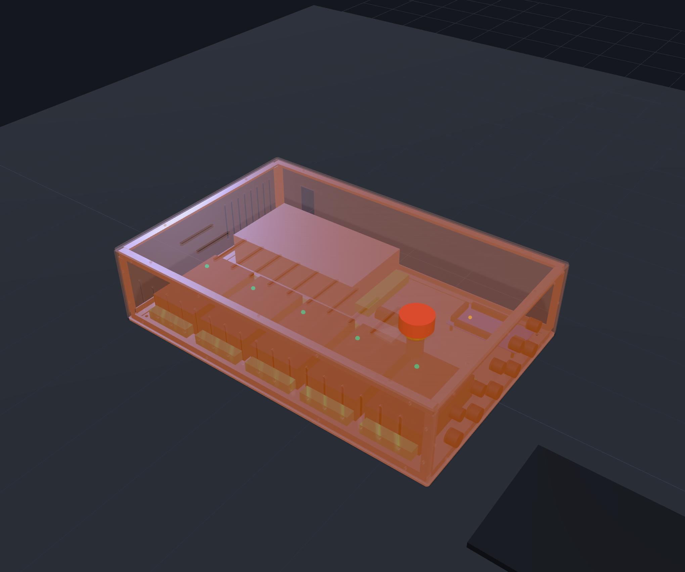
Parts| Part | Description | Qty |
|---|
| ENC-01..06 | enclosure panels | 6 |
| ANG | corner angle pieces | 12 |
| - | PSU, 5 DM542 drivers, Mega, fuse, E-stop | 1 |
| - | PG9 x5 + PG7 x5 glands, IEC inlet | 1 |
Fasteners| No. | Fastener | Qty | N·m |
|---|
| F15 | M3 x 8 button head screw + M3 nyloc nut | 60 | 0.6 |
| F16 | M3 x 10 brass standoff M-F + M3 x 6 screw + M3 nut | 4 | 0.4 |
| F17 | M4 x 10 pan head screw + M4 nyloc + washer | 24 | 1.2 |
| F18 | Rubber bumper foot 20 x 10 mm with M4 x 12 screw | 4 | - |
- Cut ENC-01..06 from fab/dxf; cut the 12 angle pieces (fab/CUTLIST.md) and deburr.
- Clamp each angle in place and transfer-drill Ø3.4 through the panel holes; assemble the box with F15.
- Drill the PSU, driver and Mega holes from the parts themselves (green MARK outlines on ENC-01) and mount them with F16/F17.
- Fit the IEC inlet, PG glands, E-stop on the lid, and the M5 earth stud. Bond every aluminium panel to earth.
- Set the driver DIP switches: 800 pulses/rev, current per motor (NEMA 23 about 3.0 A peak, NEMA 17 about 1.5 A).
Check before moving on- Earth continuity < 0.1 Ω from the IEC earth pin to every panel.
- Mains wiring checked by a qualified person before power-up.
13Wire the arm
Time about 3 h · Tools: ferrule crimper, multimeter, heat-shrink, cable ties
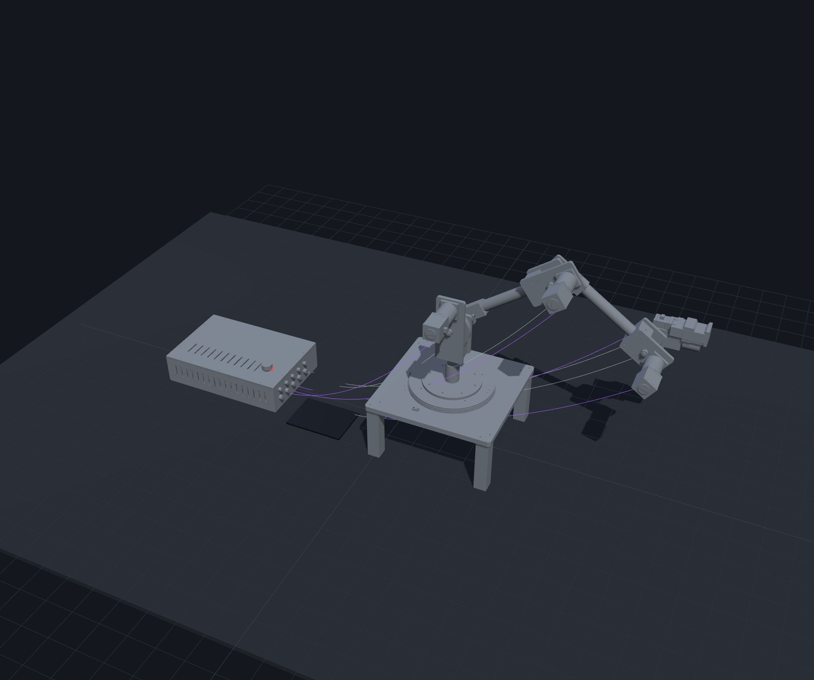
Parts| Part | Description | Qty |
|---|
| - | harness per fab/CUTLIST.md | 1 |
- Cut every run to the harness cut list (lengths include a 300 mm service loop).
- Motors: 4-core shielded cable through the PG9 glands to each driver A+/A-/B+/B-; shield to GND at the driver end only.
- Limits: 2-core twisted pair through the PG7 glands to D22-D26 and GND, 100 nF across each switch.
- Signals: Mega 5 V to PUL+/DIR+/ENA+; D2-D6 to PUL-, D7-D11 to DIR-, D12 to all ENA- (ELE-001).
- Dress cables along the arm with spiral wrap, leaving a loop at every joint for full travel.
Check before moving on- Each motor phase pair reads 1-3 Ω; no continuity between phases or to the case.
- Every joint moves through full travel without pulling a cable.
14Power up, home and load-test
Time about 2 h · Tools: PC with Chrome or Edge, multimeter, the 3D twin
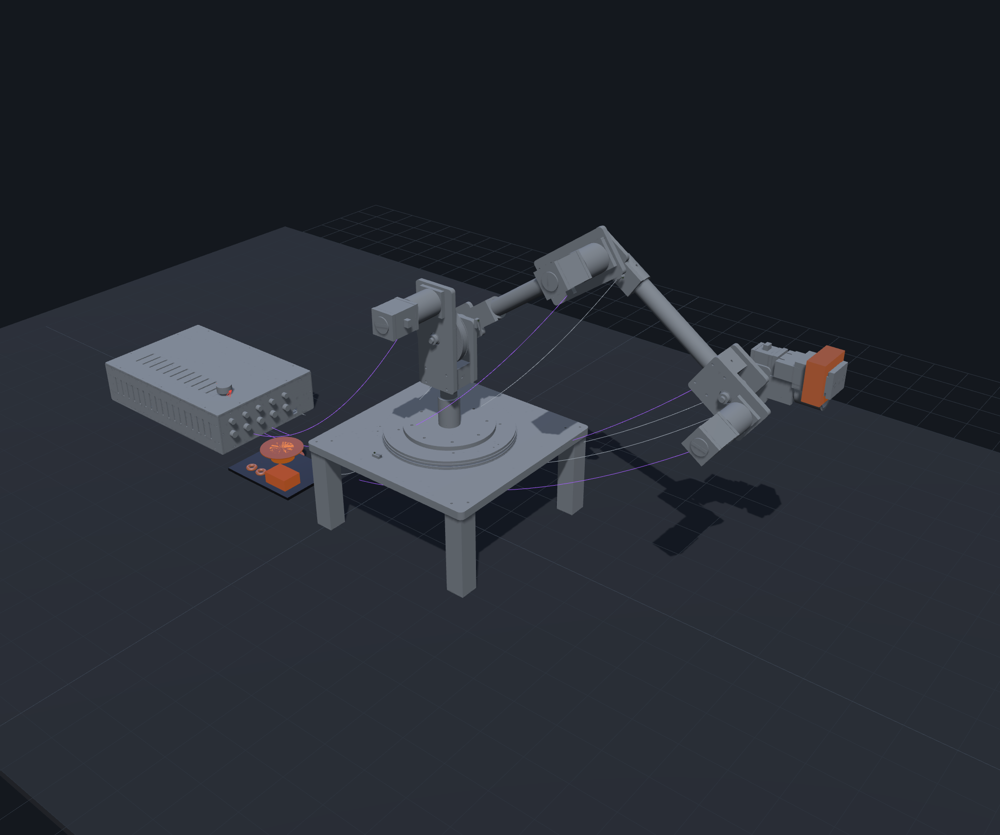
Parts| Part | Description | Qty |
|---|
| - | test payload, 5 lb in 1 lb steps | 1 |
- Flash firmware/arm_controller, connect USB, open python run.py ui and use the Link tab.
- Rehearse every motion in SIMULATION first; then power the drivers with the arm supported, E-stop in reach.
- Home each joint, then calibrate HOME_DEG in arm/control.py against a protractor.
- Load test in 1 lb steps to 5 lb at full reach, holding 30 s at each step; watch for belt slip and creep.
- Re-torque every F01, F03 and F06 after the first hour of running.
Check before moving on- E-stop cuts all motion instantly.
- 5 lb held at full reach for 30 s with no slip, no audible skipping.